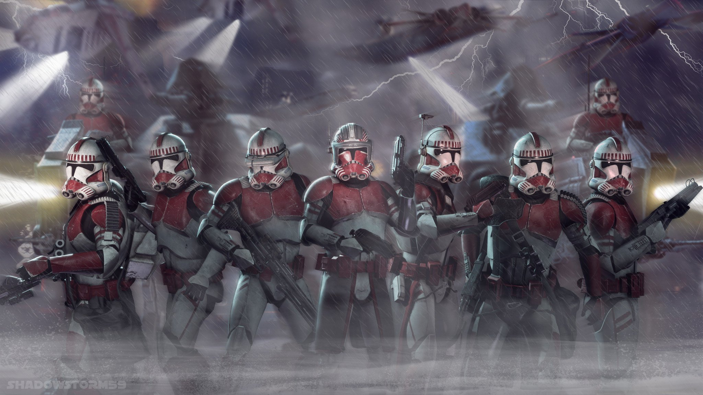

La Garde de Coruscant était une unité de la Grande Armée de la République durant la Guerre des Clones. Elle était constituée des shock troopers clones comme les commandants clones Thire, Stone, Fox et Thorn. La mission de la Garde de Coruscant consistait à protéger la capitale de la République Galactique, Coruscant ainsi que toutes les personnes importantes la représentant tel que les sénateurs ou le Chancelier Suprême Sheev Palpatine. Elle eu ainsi un rôle important lors de la bataille de Coruscant puis lors de l'Ordre 66 et de la chasse de tous les Jedi cachés sur Coruscant. Elle luttait aussi contre les criminels agissant dans les profondes rues de Galactic City. Ils avaient également la lourde tâche d'assurer la sécurité et le maintien de l'ordre dans les prisons de la capitale et autour des bâtiments principaux tel que le Sénat Galactique. Sous l'Empire Galactique, la Garde de Coruscant persista avec les shock troopers Impériaux, ils continuèrent à servir fidèlement l'Empereur et à maintenir l'ordre sur la capitale.
Le matricule CC-1010, surnommé Fox, était un commandant clone de la Grande Armée de la République. Il était le commandant de la garde de Coruscant durant la Guerre des Clones.
Il aida entre autres la sénatrice Padmé Amidala à capturer Ziro le Hutt ou Anakin Skywalker à traquer Ahsoka Tano lors de son évasion de la prison de Coruscant. Par la suite, il fut chargé de poursuivre le soldat clone Fives, qui était alors accusé d'avoir tenté d'assassiner le Chancelier Suprême Sheev Palpatine. Avant que le soldat CRA de la 501e Légion n'ait pu révéler une conspiration au sein même de la République Galactique, le commandant abattit le soldat.
Après la proclamation de l'Empire Galactique, Fox resta fidèle à l'Empereur et servit sous ses ordres jusqu'à mourir de la main de Dark Vador.
Le clone de matricule CC-5869, également surnommé Stone, était un commandant clone de la Grande Armée de la République qui servait notamment dans le corps des Shock trooper clone de la Garde de Coruscant.
Pendant la Guerre des Clones, il servait de garde du corps au Représentant Jar Jar Binks tandis qu'il était en mission sur la planète Florrum.
Au début de la Guerre des Clones, le lieutenant Thire faisait partie de la Garde de Coruscant, une division de soldats clones ayant notamment pour mission de protéger des diplomates de la République Galactique.
Peu de temps après la bataille de Christophsis, Thire accompagna le Grand Maître Yoda de l'Ordre Jedi sur Rugosa avec les soldats Rys et Jek. En effet, le Roi Katuunko, monarque de Toydaria, une planète neutre dans le conflit, souhaitait rejoindre la République après avoir permis l'acheminement de vivres aux habitants de Ryloth, subissant alors un terrible blocus de la part des Séparatistes et de Wat Tambor. Cependant, la Confédération des Systèmes Indépendants s'invita aux négociations. Il fut blessé durant le combat contre les droïdes Séparatistes.
Par la suite, Thire fut promu commandant et participa à la Purge Jedi sur Coruscant, notamment pour retrouver Yoda après sa fuite à l'issue du duel contre le nouvel Empereur Galactique Sheev Palpatine.
Durant la Guerre des Clones, Thorn reçut la mission de protéger la sénatrice Padmé Amidala lors d'une mission sur Scipio avec le Clan Bancaire Intergalactique. Néanmoins, le comte Dooku envoya des canonnières droïdes HMP remplies de super droïdes de combat B2 et de droïdes commando BX et des bombardiers pour détruire les renforts Républicains et faire croire à tous que le Clan Bancaire était affilié aux Séparatistes. La corvette de la délégation sénatoriale fut bientôt détruite et les canonnières qui l'escortaient furent clouées au sol ou abattu au vol.
Thorn et les soldats qui n'avaient pas péri dans les explosions luttèrent jusqu'à leur dernier souffle, se battant au corps à corps. Néanmoins, les droïdes, plus nombreux, prirent rapidement le dessus. Thorn finit rapidement par se retrouver seul, encerclé par des dizaines de droïdes de combat, se sachant perdu, il continua à combattre, décimant le plus d'ennemis possible avec son canon blaster Z-6, avant de périr sous leurs tirs.
Lorsque la 501e Légion investit la planète, ils découvrirent le corps sans vie du glorieux combattant, enseveli sous les carcasses des droïdes qu'il avait abattus.
Hound était un sergent clone qui servit dans la Grande Armée de la République pendant la Guerre des Clones. Il faisait partie des soldats de la Force de Reconnaissance Avancée et il était affilié à la Garde de Coruscant.
Lors de la traque de la Padawan Ahsoka Tano sur la planète Coruscant, Hound utilisa un massiff nommé Grizzer afin de suivre sa trace.
Peu après le début de la Guerre des Clones, Jek fit partie d'une escouade de Garde de Coruscant menée par le lieutenant Thire, chargée d'escorter le Grand Maître Yoda sur Rugosa. En effet, le Jedi devait rencontrer Katuunko, roi de Toydaria, afin de le convaincre de rallier la République Galactique. Cependant, la Confédération des Systèmes Indépendants s'invita aux négociations. Alors que leur croiseur de classe Consular tomba dans une embuscade tendue par deux frégates stellaire de classe Munificent. Jek et ses compagnons durent alors atterrir sur Rugosa, loin du point de rendez-vous.
Le roi Toydarien, le Comte Dooku et Yoda parvinrent alors à un accord. Si les républicains parvenaient à triompher des troupes séparatistes de Asajj Ventress, alors Toydaria rejoindrait la République, mais si les séparatistes triomphaient des républicains, alors Toydaria rejoindrait la CSI. Finalement, Yoda, Jek et ses compagnons parvinrent à triompher des troupes séparatistes sans aucune perte.
Peu après le début de la Guerre des Clones, Rys fit partie d'une escouade de Garde de Coruscant menée par le lieutenant Thire, chargée d'escorter le Grand Maître Yoda sur Rugosa. En effet, le Jedi devait rencontrer Katuunko, roi de Toydaria, afin de le convaincre de rallier la République Galactique. Cependant, la Confédération des Systèmes Indépendants s'invita aux négociations. Alors que leur croiseur de classe Consular tomba dans une embuscade tendue par deux frégates stellaire de classe Munificent. Rys et ses compagnons durent alors atterrir sur Rugosa, loin du point de rendez-vous.
Le roi Toydarien, le Comte Dooku et Yoda parvinrent alors à un accord. Si les républicains parvenaient à triompher des troupes séparatistes de Asajj Ventress, alors Toydaria rejoindrait la République, mais si les séparatistes triomphaient des républicains, alors Toydaria rejoindrait la CSI. Finalement, Yoda, Rys et ses compagnons parvinrent à triompher des troupes séparatistes sans aucune perte.